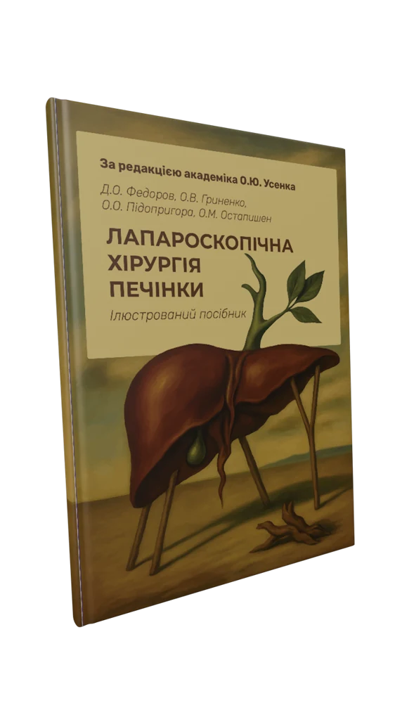
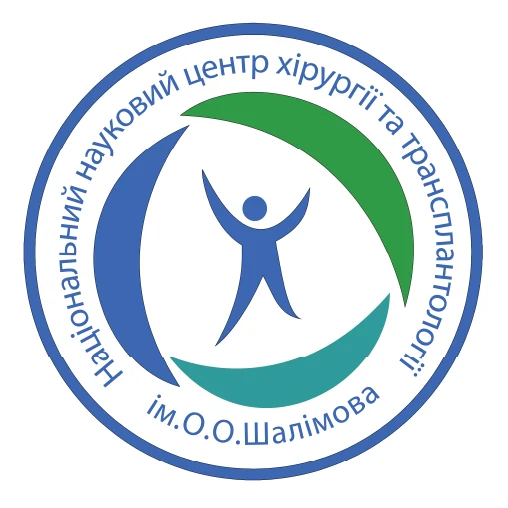
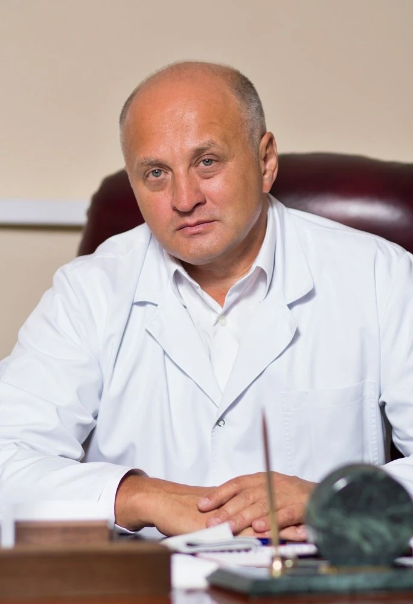
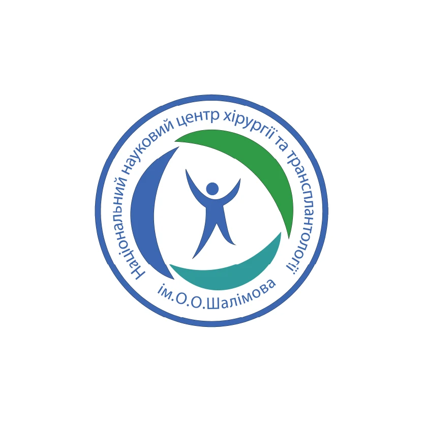
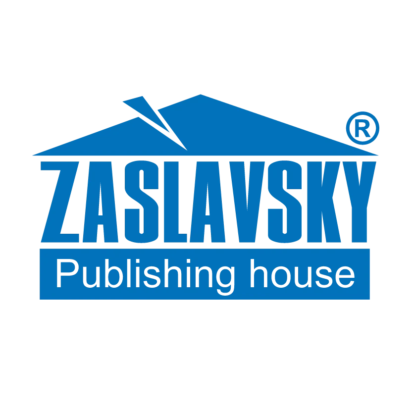
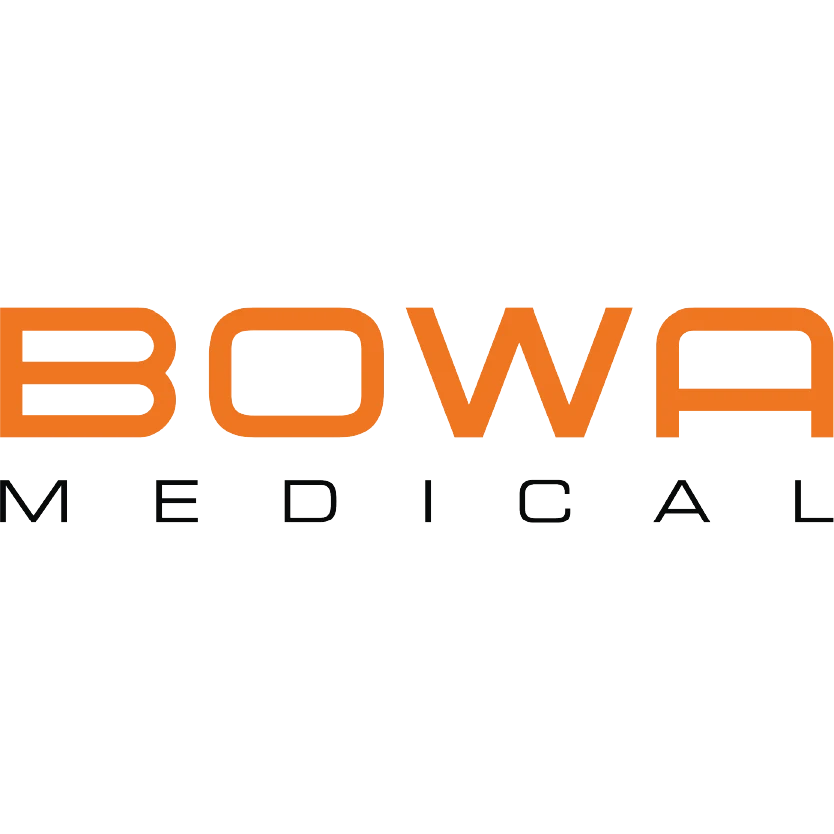
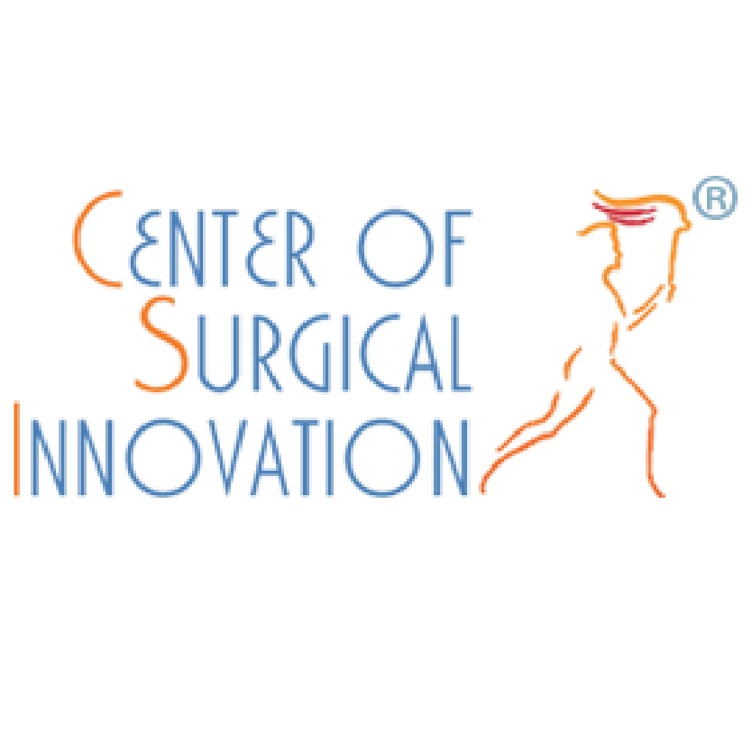

Якісне повнокольорове видання
Для видання ми використали найкращі поліграфічні матеріали та високу якість друку.


Ілюстрований посібник за редакцією
академіка О. Ю. Усенка
Перше в Україні практичне видання з високотехнологічної хірургії печінки
Для видання ми використали найкращі поліграфічні матеріали та високу якість друку.
Сучасні світові підходи до проведення лапароскопічних резекцій печінки та клінічний досвід ННЦХТ ім. О. О. Шалімова.
Кожен етап операції детально описано та ілюстровано.
Видання містить найцікавіші випадки з найбільшої в Україні серії таких операцій.
Вдоскональте свої навички високотехнологічних втручань на печінці.
Розширте свій хірургічний світогляд та опануйте нові види втручань.
Оберіть свою майбутню спеціалізацію та отримайте практичні знання.
Знання. Досвід. Практика.
Зазирнути всерединуВід теорії до операційної
Розділ 1
Теоретичні аспекти застосування лапароскопічних резекцій печінки: епідеміологія, онкологічні принципи, показання, відбір пацієнтів та підходи до планування операцій.
Розділ 2
Детально описані всі етапи виконання операції — від укладки пацієнта до видалення макропрепарата. Кожен етап доповнений ілюстраціями, схемами та посиланням на відповідний відеофрагмент.
Розділ 3
Клінічні випадки виконання всіх основних видів резекційних лапароскопічних втручань на печінці із посиланнями на ілюструюче відео.

Головний редактор
Доктор медичних наук, професор, академік НАМН України, перший віцепрезидент НАМН України, Генеральний директор ДУ «Національний науковий центр хірургії та трансплантології імені О. О. Шалімова» НАМН України.




Ілюстрований посібник
Більшість друкованих примірників уже знайшли своїх читачів. Щоб уточнити наявність та умови придбання, напишіть нам.
liversurgerybook@gmail.com Написати щодо замовленняПідтримайте Збройні Сили України